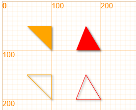

其他图形¶
点 point¶
绘制方法 point¶
point(x, y, *color)
/**************************
x - 点x坐标
y - 点y坐标
color - 颜色，默认为orange
**************************/
点对象 Point¶
class Point extends Circle {
constructor (x, y, color="red")
线段 line¶
用直尺把两点连接起来，就得到一条线段。线段长就是这两点间的距离。 在连接两点的所有线中，线段最短。简称为两点之间线段最短。
只要确定线段的两个定点的位置，就可以确定一条线段的位置。
line(x1, y1, x2, y2, *lineWidth, *color)
/**************************
x1 - 起点x坐标
y1 - 起点y坐标
x2 - 终点x坐标
y2 - 终点y坐标
lineWidth - 线宽，默认为1
color - 颜色，默认为orange
**************************/
如果我们想要实现更多复杂的效果，那么我们就需要使用Line对象，详见Line章节。
三角形 triangle¶
绘制方法¶
triangle(x1, y1, x2, y2, x3, y3, *color)
代码举例：
canvas.showAxis();
triangle(50, 50, 100, 50, 100, 100);
triangle(150, 100, 170, 50, 200, 100, 'red');
fill(false);
triangle(50, 150, 100, 150, 100, 200);
triangle(150, 200, 170, 150, 200, 200, 'red');

多边形 polygon¶
简单绘制¶
polygon(x1, y1, x2, y2, x3, y3, ..., *color)
/**************************
x1, y1 - 第一个点的坐标
x2, y2 - 第二个点的坐标
...
至少需要3个点，按照点的顺序连接起来
**************************/
多边形对象 Polygon¶
class Polygon(x1, y1, x2, y2, x3, y3, ...){}
/***************************************************************
多边形类
x1, y1: 多边形第一个点的位置
x2, y2: 多边形第二个点的位置
x3, y3: 多边形第三个点的位置
...
注意：polygon的点记录在在triangle.points中
polygon.points: {x1, y1, ... }
***************************************************************/
坐标 x, y
获取或者设置多边形的中心点
实例：五角星
var poly = new Polygon(100, 50, 50, 150, 160, 80, 40, 80, 150, 150);
poly.lineWidth = 3;
poly.strokeStyle = "red";
poly.fillStyle = "orange";
poly.stroke();
poly.y += 150;
poly.fill();
poly.x += 150;
poly.radius = 40; // both radius or r works
poly.shadowColor = 'pink';
poly.shadowBlur = 4;
poly.shadowOffsetX = 5;
poly.shadowOffsetY = 5;
poly.fill();
运行效果:
椭圆 ellipse¶
绘制方法¶
椭圆看起来就像是一个被压扁的圆，因此它有2个半径，一个数水平方向的半径radiuX，一个是垂直方向的半径radiuY。
ellipse(x, y, xRadius, yRadius, *color)
/***************************************************************
在画布上画出一个椭圆：
* 椭圆的圆心位置为（x,y）
* 椭圆水平方向的半径为xRadius
* 椭圆垂直方向的半径为yRadius
* 颜色为为color，可选参数，默认为 "orange"
***************************************************************/
同样的，我们可以用ellipse来在画布上画出椭圆
canvas.showAxis();
ellipse(100, 100, 30, 20);
ellipse(200, 100, 20, 30, 'green');
ellipse(300, 100, 40, 30, 'red');
fill(false);
ellipse(100, 200, 30, 20);
ellipse(200, 200, 20, 30, 'green');
ellipse(300, 200, 40, 30, 'red');
你能不能在图中找对每行代码对应的椭圆呢？
椭圆对象 Ellipse¶
class Ellipse(x, y, radiusX, radiusY)
/***************************************************************
椭圆类
x, y: 椭圆的圆心位置
radiusX: 椭圆的水平半径
radiusY: 椭圆的垂直半径
***************************************************************/
方法¶
draw
例子
canvas.resize(450, 300);
canvas.showAxis();
var e = new Ellipse(100, 100, 50, 20); // x, y, rX, rY
e.strokeStyle = "red";
e.fillStyle = "orange";
e.draw();
e.y += 100;
e.rX = 30;
e.fill();
e.x += 100;
e.radiusY = 40; // both radiusY or rY works
e.shadowColor = 'pink';
e.shadowBlur = 4;
e.shadowOffsetX = 5;
e.shadowOffsetY = 5;
e.fill();
运行效果